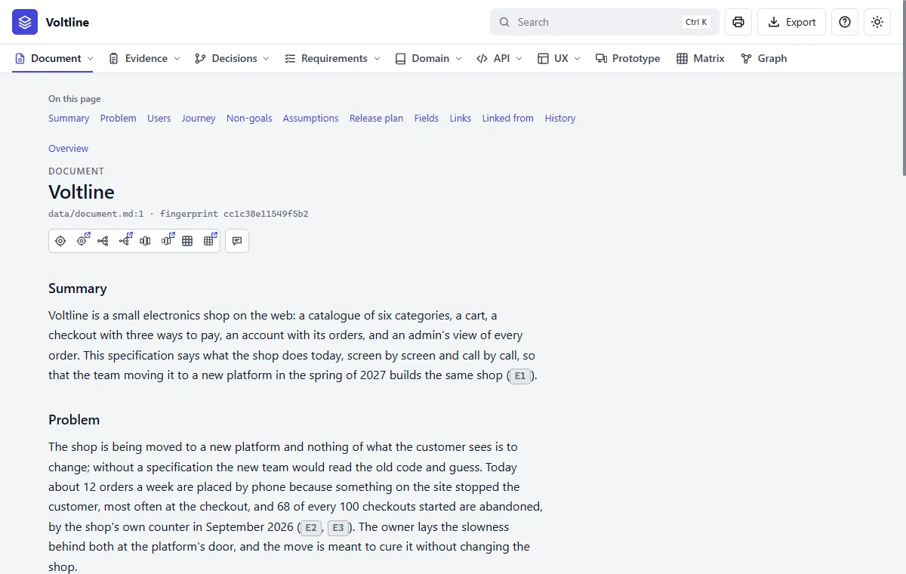

Part 3: Reading what you get
Document
In everyday termsThe cover letter. Before the details, a specification needs a page saying what the product is, who it's for and what problem it solves, in ordinary sentences. If someone reads only one page, it's this one.
What it answersWhat is this product, who is it for, and what's the problem?
The page, part by part

- 1On this page. Jumps to a section. Every long page has it.
- 2The icons. Show this node in the Graph and the Matrix. Every node's page has them.
- 3Summary. Three sentences: what, for whom, for what outcome.
- 4Problem. What's wrong today. Its numbers are tied to evidence, such as
E2.
This is the one place in the specification that reads as prose, because a product needs a story. It holds the summary, the problem, the users, the journey, the non-goals, the assumptions and the release plan. A section with nothing to say is left out.
Don't expect it to hold requirements. It says what the product is about, and the requirements say what it must do.
Read it like this
- Read the Summary and the Problem. If you read nothing else, read these.
- Read the Non-goals. They settle more arguments than the goals do.
- Notice the small ID chips in the text, such as
E2. A claim here points at its evidence. Pause on one to see what it is, or right click for its card. - Check the status under Fields: draft or agreed.
Mistakes people make
- Writing requirements here. In this text, nothing can link to them or test them.
- Skipping Non-goals. They say what the team has agreed not to build.